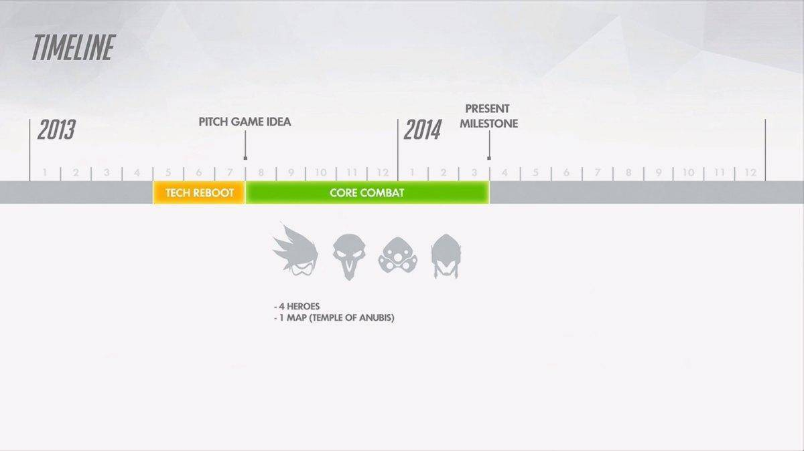
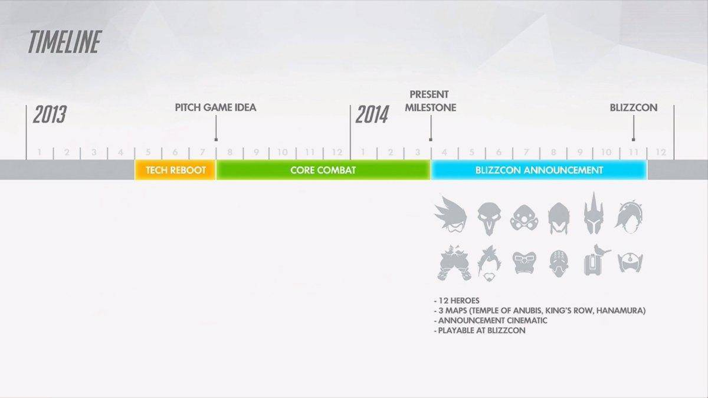
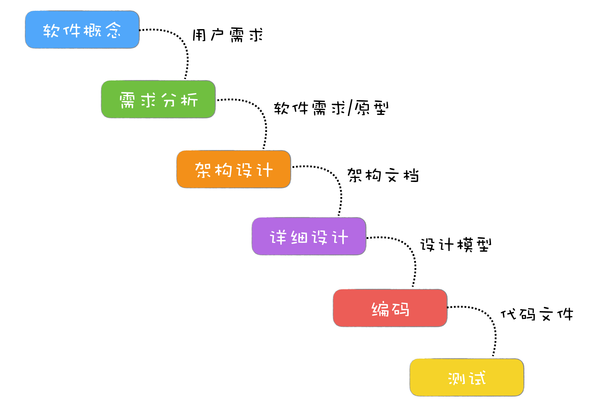
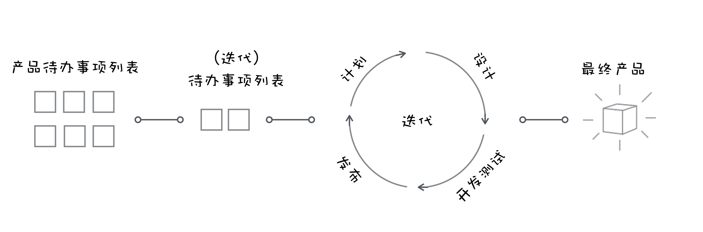

- 00 开篇词 你为什么应该学好软件工程？.md.html
- 01 到底应该怎样理解软件工程？.md.html
- 02 工程思维：把每件事都当作一个项目来推进.md.html
- 03 瀑布模型：像工厂流水线一样把软件开发分层化.md.html
- 04 瀑布模型之外，还有哪些开发模型？.md.html
- 05 敏捷开发到底是想解决什么问题？.md.html
- 06 大厂都在用哪些敏捷方法？（上）.md.html
- 07 大厂都在用哪些敏捷方法？（下）.md.html
- 08 怎样平衡软件质量与时间成本范围的关系？.md.html
- 09 为什么软件工程项目普遍不重视可行性分析？.md.html
- 10 如果你想技术转管理，先来试试管好一个项目.md.html
- 11 项目计划：代码未动，计划先行.md.html
- 12 流程和规范：红绿灯不是约束，而是用来提高效率.md.html
- 13 白天开会，加班写代码的节奏怎么破？.md.html
- 14 项目管理工具：一切管理问题，都应思考能否通过工具解决.md.html
- 15 风险管理：不能盲目乐观，凡事都应该有B计划.md.html
- 16 怎样才能写好项目文档？.md.html
- 17 需求分析到底要分析什么？怎么分析？.md.html
- 18 原型设计：如何用最小的代价完成产品特性？.md.html
- 19 作为程序员，你应该有产品意识.md.html
- 20 如何应对让人头疼的需求变更问题？.md.html
- 21 架构设计：普通程序员也能实现复杂系统？.md.html
- 22 如何为项目做好技术选型？.md.html
- 23 架构师：不想当架构师的程序员不是好程序员.md.html
- 24 技术债务：是继续修修补补凑合着用，还是推翻重来？.md.html
- 25 有哪些方法可以提高开发效率？.md.html
- 26 持续交付：如何做到随时发布新版本到生产环境？.md.html
- 27 软件工程师的核心竞争力是什么？（上）.md.html
- 28 软件工程师的核心竞争力是什么？（下）.md.html
- 29 自动化测试：如何把Bug杀死在摇篮里？.md.html
- 30 用好源代码管理工具，让你的协作更高效.md.html
- 31 软件测试要为产品质量负责吗？.md.html
- 32 软件测试：什么样的公司需要专职测试？.md.html
- 33 测试工具：为什么不应该通过QQ微信邮件报Bug？.md.html
- 34 账号密码泄露成灾，应该怎样预防？.md.html
- 35 版本发布：软件上线只是新的开始.md.html
- 36 DevOps工程师到底要做什么事情？.md.html
- 37 遇到线上故障，你和高手的差距在哪里？.md.html
- 38 日志管理：如何借助工具快速发现和定位产品问题 ？.md.html
- 39 项目总结：做好项目复盘，把经验变成能力.md.html
- 40 最佳实践：小团队如何应用软件工程？.md.html
- 41 为什么程序员的业余项目大多都死了？.md.html
- 42 反面案例：盘点那些失败的软件项目.md.html
- 43 以VS Code为例，看大型开源项目是如何应用软件工程的？.md.html
- 44 微软、谷歌、阿里巴巴等大厂是怎样应用软件工程的？.md.html
- 45 从软件工程的角度看微服务、云计算、人工智能这些新技术.md.html
- 一问一答第1期 30个软件开发常见问题解决策略.md.html
- 一问一答第2期 30个软件开发常见问题解决策略.md.html
- 一问一答第3期 18个软件开发常见问题解决策略.md.html
- 一问一答第4期 14个软件开发常见问题解决策略.md.html
- 一问一答第5期 22个软件开发常见问题解决策略.md.html
- 学习攻略 怎样学好软件工程？.md.html
- 特别放送 从软件工程的角度解读任正非的新年公开信.md.html
- 结束语 万事皆项目，软件工程无处不在.md.html
- 捐赠
01 到底应该怎样理解软件工程？
你好，我是宝玉，我今天分享的主题是：什么是软件工程？
当有人问你什么是软件工程，你会想到什么？
也许你会想到软件，会想到建筑工程，也许对此还没有什么概念。不要紧，在回答这个问题前，我们先来看看软件工程和我们的日常生活有哪些关系。
作为一个程序员，你的日常大致是这样的：早上被手机的闹钟叫醒，然后坐地铁去上班。在路上你会打开微信和朋友闲聊几句，刷刷微博，还会用 Youtube 看看视频充充电；上班的时候，你打开 Mac 电脑，用 VS Code 写程序，用 Chrome 看网页，下班后再玩几局守望先锋游戏。
你发现了没？在这一天的日常生活里面，软件无处不在。手机操作系统软件、闹钟 App、微信、微博、Youtube、Mac OS、VS Code、Chrome、守望先锋，这些都是软件，你的日常生活已经和这些软件密不可分。
软件是怎么被创造出来的？
那么你有没有想过，这些软件是怎么来的呢？
首先，它们的诞生都是有人想要造一个东西。这其中的很多故事你都耳熟能详：张小龙创造微信、乔布斯创造 iOS、暴雪想做一款不一样的射击游戏……他们首先有着这样的意图，然后，他们立项做这样的产品。
每一款软件项目背后，都有很多人在参与。你无法想象微信这样复杂的 App 靠张小龙自己可以开发出来；你也不会相信 iOS 是乔布斯一个人设计出来的；像守望先锋这种游戏的背后，有成百上千的游戏策划、美术设计、程序开发人员。
从立项到第一个版本的发布，每个成功的软件都需要有计划、有步骤地进行，什么时候发布第一个版本、第一个版本有什么样的功能、什么时候发布第二个版本、第二个版本有哪些地方要改进，这些都是研发过程中需要考虑的问题。
比如，守望先锋是在 2013 年立项，他们计划做一个基于职业的 MMO 游戏，他们先花了几个月的时间做了第一个 Demo 演示，只有四个英雄和一个张地图。

然后，他们要在 2014 年的“暴雪嘉年华”发布这个游戏的试玩版，包含 12 个英雄和 4 张地图。

最终这个游戏在 2016 年 5 月正式发布了。这样从立项一步步到最终发布，历时三年，中间经过了诸多环节。
类似的例子还有微信，2010 年 11 月 20 日立项，2011 年 1 月 21 日第一版上线，当时的功能还非常简陋，只能发送文本消息和照片。之后才是一个个版本的迭代，直到你现在看到的微信。
像这种有人参与、有计划、有步骤地造一件产品，我们通常称为“工程”。
所有工程的本质，就是要做出有用的产品，比如造房子的建筑工程、造火箭的航天工程。像网红“手工耿”一样专搞无用发明的情况，我们是不能称为“工程”的。
在软件领域，对应的就是“软件工程”，这些我们日常使用的软件背后，都是基于软件工程的方法在开发、运行和维护的。
如何摆脱“软件危机”？
也许有人会认为，不用软件工程，我一样可以开发软件出来。这确实没有错，因为如果一个人没有学过建筑工程，他也是可以造一个房子出来，只是造出来大概会是这个样子：
我们知道，不按照建筑工程造房子，是会出事故甚至死人的。而在软件工程的历史上，也是真的有造成过很大损失、甚至还有人为之丧命的事件存在。
OS/360 操作系统是上世纪 60 年代最复杂的软件系统之一，也是第一个超大型的软件项目，一共有 1000 名左右的程序员参与了项目的研发，花费了 5000 个人年，最终无法运行。项目负责人佛瑞德·布鲁克斯后来写了一本软件工程的经典书籍《人月神话》，承认在他管理这个项目的时候，犯了很多错误，造成了价值数百万美元的损失。
如果是说 OS/360 还只是造成了经济损失的话，Therac-25 事件就是真的导致了人员死亡。Therac-25 是加拿大原子能有限公司（AECL）所生产的放射线疗法机器，在 1985 年到 1987 年之间，在美国及加拿大，至少有六起和 Therac-25 相关的医疗事故是因为程序 bug，导致部分病患受到比正常剂量高一百倍的辐射，因而造成患者重伤甚至死亡。
发生这些惨痛的事，原因却并不难理解。
在计算机刚发明出来的时候，计算机的能力非常有限，只能接收简单的指令和运算，不需要软件工程也可以开发出简单的软件。
但是，当软件的规模越来越大，复杂度不断增加，软件项目开发维护过程中的问题就逐步暴露出来：软件产品质量低劣、软件维护工作量大、成本不断上升、进度不可控、程序人员无限度地增加。所以在 60 年代，“软件危机”的概念被提出来。
为了摆脱软件危机，1968 年秋季，北大西洋公约组织的科技委员会召集了近 50 名一流的编程人员、计算机科学家和工业界巨头，讨论和制定对策。在那次会议上第一次提出了“软件工程”（software engineering）这个概念。
从此诞生了一门新兴的工程学科：软件工程，它是为研究和克服软件危机而生。
在这次会议上，同时也提出了“软件工程”的定义：
为了经济地获得在真实机器上可靠工作的软件而制定和使用的合理工程原则。
（Software engineering is the establishment and use of sound engineering principles in order to obtain economically software that is reliable and works efficiently on real machines.）
1993 年，电气电子工程师学会（IEEE）给出了一个更加综合的定义：
将系统化的、规范的、可度量的方法用于软件的开发、运行和维护的过程，即将工程化应用于软件开发中。
（Software Engineering: (1) The application of a systematic, disciplined, quantifiable approach to the development, operation, and maintenance of software; that is, the application of engineering to software. (2) The study of approaches as in (1).）
如果你去搜索一下“软件工程定义”，你还能找到很多其他定义，这里就不一一列举。我们没必要花太多时间在这些字面解释上，关键是要抓住这些定义的本质：就是要用工程化方法去规范软件开发，让项目可以按时完成、成本可控、质量有保证。
软件工程的演化史
对比传统的工程学科，和软件工程最接近的就是建筑工程了。设想一下建一座房子：首先要先立项、设定预算，然后画设计图，再是施工，施工完成后，由专业人士进行质量检查，质检合格后入住。
开发软件本质上也是像盖房子一样，是从无到有创造的过程。工程化的方式，就是你分步骤（过程），采用科学的方法，借助工具来做产品。
于是参考建筑工程，整个软件开发过程也被分成了几个阶段：需求定义与分析、设计、实现、测试、交付和维护，这也就是我们常说的软件项目生命周期。
当然，各个阶段都会有人的参与，于是产生了软件项目里的各种角色：项目经理、产品经理、架构师、程序员、测试工程师、运维工程师。而对这整个过程的管理，我们通常称之为“项目管理”。
同时，也很自然就衍生出一套最基础的过程模型：瀑布模型。

瀑布模型的诞生，在当时是有非常重大的意义的，让软件开发从无序到有序，让大家更好的分工协作，同时每个阶段又衍生出各自的方法学和工具，例如需求分析、软件测试等等。
然而瀑布的特性决定了它只能从上往下流，而且从上到下走完整个周期很长，所以一旦出现了需求的变更，将会非常痛苦，很多事情需要重头再来。
于是基于瀑布模型，又衍生出 V 模型、原型设计、增量模型、螺旋模型等模型，试图改善瀑布模型存在的一些缺陷。这些改进模型的发展趋势上就是缩短项目周期，快速迭代。
这样到了 90 年代，各种轻量级开发方法例如 Scrum、极限编程等也不断被提出。到了 2001 年，这些轻量级开发方法一起组成了敏捷联盟，其后敏捷开发如同星星之火，逐渐形成燎原之势。

近些年，云计算、微服务这些新技术的产生，也对软件工程产生了影响。云服务让分工更细，很多企业可以将运维、服务器维护、DBA、甚至某些独立服务交给云服务商；微服务让大团队变成小团队，每个小团队可以更专注于细分领域，减少相互之间的依赖。
一个公式
当你大致了解整个软件工程的演变发展史，你会发现，软件工程的知识，都是建立在软件项目的过程，或者说软件项目生命周期之上的。
基于软件过程，我们有了角色分工，有了对过程的管理和工具，对过程中每个阶段细分的方法学和工具。
现在，如果再回头看看我们的问题“什么是软件工程？”其实可以总结为：软件工程就是用工程化的方法来开发维护软件。也可以说软件工程就是用一定的过程，采用科学的方法，借助工具来开发软件。
如果用一个简单的公式表达，那就是：软件工程 = 过程 + 方法 + 工具。
总结
今天，我和你一起追溯了一下软件工程的起源，你知道了软件工程学科的产生，就是为了解决软件危机。也见证了整个软件工程的演变历史，从瀑布模型到敏捷开发。
从 1968 年提出软件工程到现在，正好是 50 年。在 2002 年，我最开始学软件工程专业的时候，还只有瀑布模型、需求分析、系统设计等这些传统软件工程内容，但是经过十几年的发展，在软件项目中，敏捷开发、持续集成、微服务等这些新兴内容已经开始在软件项目中占据越来越重要的位置。
可以预见，未来软件工程领域还会有新的概念、新的知识诞生。但是万变不离其宗，只要你抓住软件工程的本质，无论将来如何变化，你总能很快掌握新的知识内容。
而软件工程的核心，就是围绕软件项目开发，对开发过程的组织，对方法的运用，对工具的使用。
© 2019 - 2023 Liangliang Lee. Powered by gin and hexo-theme-book.